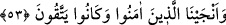

kavminin kafirlerine de yaparım. Bunlar, onlardan daha hayırlı değildirler. Nitekim
Keşfü’l-esrâr’da böyle geçmektedir.
53. Allah’a karşı gelmekten sakınanları ise kurtardık.
“Îman edip karşı gelmekten sakınanları” Salih (a.s.) ve beraberindeki küfürden ve
günahlardan sürekli olarak sakınan mü’minleri “ise kurtardık.” Bu yüzden kurtuluş
onlara tahsis edildi. Onlar dört bin kişiydi. Salih (a.s.) onları yanına alarak Yemen
şehirlerinden Hadramevt’e gitti. Buraya Hadramevt denilmesi, Salih (a.s.) bu şehre
girince vefat ettiği içindir.
Burada işâret vardır ki zulüm olan yerden adâletin hâkim olduğu yere hicret etmek
lâzımdır. Özellikle de türlü cezâlara dûçar edilen zâlimlerin yurdundan. Çünkü zulüm
mekanı, zulmettir, orada yapılan ibâdetin nûru yoktur. İnsan bir yerde zulmedip sonra
tevbe ederse, onun için efdal olan oradan Allah’a isyan etmediği başka bir yere hicret
etmesidir.
Sonra insanın kalıbı/bedeni şehrinde zâlim ve bozguncu olan anâsır-ı erbaa (dört
unsur) ve beş duyu -ki bunlar dokuz “şahıs/elebaşı”dır-, kendilerine muhâlefet ettiği için
kalb Sâlih’ine üstün gelmek için çalışırlar. Çünkü kalb, onları kulluğa ve şehvetleri
terke çağırır. Onlar da kalbi dünyaya bakmaya, âhiretten yüz çevirmeye ve Mevlâ’nın
hizmetini bırakmaya çağırır. Kalb, rabbânî ilhamla müeyyed olunca zâhir ve bâtın
hazlara meyletmez ve bütün kuvvetlere galib gelir. Böylece o kurtulur, dokuz hâsse/duyu
ve âfetleri helâk olur. Kalıp/beden ve duyuların evleri olan uzuvlar,
hâsselerden/duyulardan ve âfetlerden hâlî/boş kalır. Sonra ölünce bir daha asla
dirilmezler. Ne güzel söylenmiştir: “Fânî olan, kendi vasıflarına geri döndürülmez.”
Evliyâ için tabiatlarının gereği korku yoktur. Çünkü tabiat ve nefis düşmandır ve
düşmanlık, gadir ve hileden hâlî olmaz. O hâlde düşmanlık muhabbete dönüşürse, mekr
zâil olur, korku da kalmaz.
Allah’tan bizi nefsin ve şeytanın tuzaklarından, her zaman mutlak olarak düşmanların
hilelerinden kurtarmasını niyâz ederiz.
Ebû Dâvûd, Edahi, 21; Müsned, VI, 381.
Bk. Müsned, II, 332.